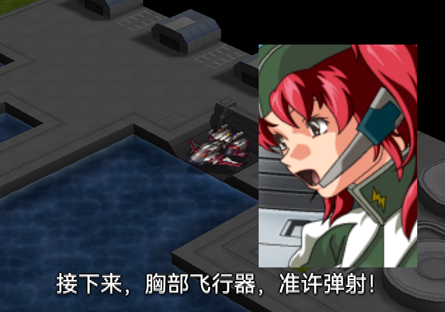

事件字幕：第六版与第七版
第七版：字号32；按4倍显示尺寸渲染后，直接平均缩到原生帧缓冲需要的字幕纹理，运行时1:1点采样。白字黑描边、轻阴影、透明底，底部位置不变。
同一句台词及相近播放时刻，来自不同冷启动会话；背景不作为逐像素对照。截图原始尺寸640×448，页面过窄时会缩放，查看原图可避免浏览器缩图影响判断。
脉冲：同一句字幕
阿克艾里昂：4位纹理
爆爱无限光：屏幕反馈
最长一句
接下来，胸部飞行器，准许弹射！
37句中文文本未改写。鉴赏完整性缺项单独记录，后续再做。